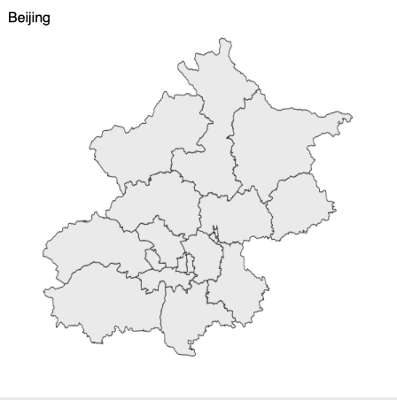

Where do the county maps come from?
Simply, they are splited from city maps. Take Bejing as an example, its own map

could be splitted into the following independent shapes:

Theory
geojson is a json file and can be edited by any json editor. Let drop Beijing geojson file into json editor online.

You will find that it consists of 16 geojson features. The first one is called “东城区”
If you have node, we can have a programmatic inspection:

One step operation
Now let use echarts-mapmaker's split:
$ split geojson/shape-with-internal-borders/beijing.json
$ ls
东城区.geojson 怀柔区.geojson 通州区.geojson
丰台区.geojson 房山区.geojson 顺义区.geojson
大兴区.geojson 昌平区.geojson 石景山区.geojson
密云区.geojson 朝阳区.geojson 门头沟区.geojson
平谷区.geojson 海淀区.geojson
延庆区.geojson 西城区.geojson
Conclusion
2882 counties, islands and districts were done in this way.